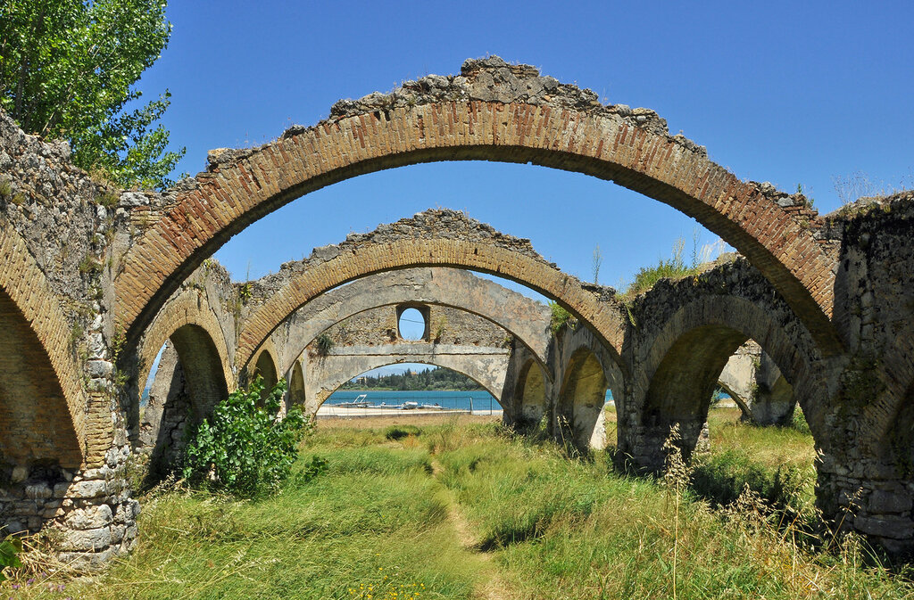
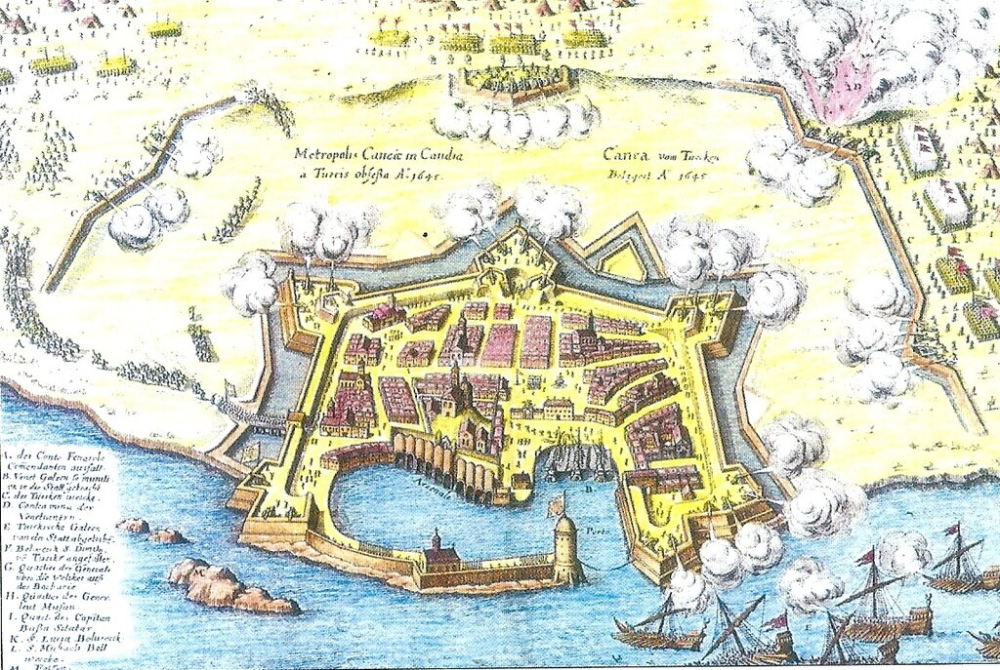
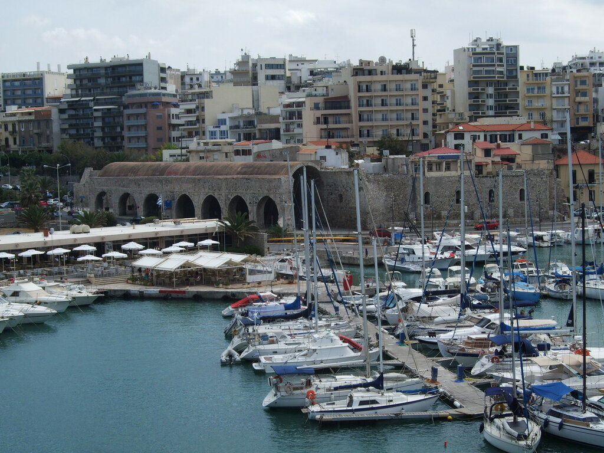

pascendi поставил несколько вопросов, ответить на которые появилось время только сейчас. Вот эти вопросы:
pascendi поставил несколько вопросов, ответить на которые появилось время только сейчас. Вот эти вопросы:
На Корфу были ли венецианские верфи?
И вообще, в каких местах они были?
У меня такое ощущение, что венецианцы строили их везде, где был крупный порт и доступ к дереву.
Если учесть мощности этих -- распределенных по Адриатике и Криту -- верфей, так, пожалуй, общее количество галер, которым располагали венецианцы, как бы не удваивается?
Начнем с первого вопроса. На Корфу верфей не было ни венецианских, ни каких-либо других. Был порт, строительство которого продвигалось очень медленно (строили его почти всю первую половину XV века), были мощности для перевалки местного корабельного леса, который ценился у судостроителей того времени, но верфи или арсенала на Корфу не было.
Корфу для Венеции был прежде всего важным источником сельскохозяйственной продукции: вино (начиная с XVI века), сухие фрукты, оливковое масло (после XVI века), сыр, мед , пшеница, шерсть, изделия из шелка, а также соли. Кроме того, порт Корфу служил удобным пунктом базирования с надежной якорной стоянкой для купеческих судов и военных кораблей. Именно по этой причине венецианский дож Энрико Дандоло потребовал включения Корфу с соглашение о разделе добычи с крестоносцами накануне захвата Константинополя во время 4-го Крестового похода (1204 г.) В период создания Венецианской колониальной державы после этого похода на оккупированных территориях искусственные порты были построены венецианцами только на Крите, в Короне и Метоне.
Въедливый читатель может тут же возразить: а как же быть с так называемым венецианским арсеналом Гувия на Корфу?

Руины арсенала в Гувии. Фото Marc Ryckaert
Действительно, был такой. В начале XVIII века, в период острого противостояния Венецианской республики с Османской империей, на Корфу базировались две эскадры флота Светлейшей: одна галерная и одна –парусных кораблей. После так называемой Второй великой осады Корфу турками в 1716 году, венецианцы убедились, что без хорошей судоремонтной базы боевые действия флота в условиях блокады коммуникаций с Венецией очень затруднены. Вот тогда и были построены доки и судоремонтные верфи в Гувии. Там же были сооружены и пакгаузы для хранения запаса продовольствия и других припасов. Подобные же арсеналы были в Модоне (Метони), Короне (Корони), Халкиде (Эвбея), Превезе, Ханье и Ираклионе (последние два на Крите).

А теперь – о верфи в Кандии (Ираклионе) на Крите.
Венецианцы не были основателями кораблестроения на Крите. Еще в IX веке там был построен мусульманами арсенал (Dar as-Sina’a). Судьба его неизвестна. Византийцы интереса к нему не проявляли, поэтому сооружение было скорее всего разрушено частыми в этом месте землетрясениями. Первый арсенал в венецианской Кандии был построен в 1282 году, но также уничтожен землетрясением 1300-го года. Его удалось восстановить и включить в венецианскую систему морской обороны.
Основная задача арсенала была не в постройке новых кораблей, а в хранении галер венецианского военного флота в зимний период и проведении ремонтно-восстановительных работ. Для этого использовались специальные береговые сооружения, напоминавшие сухие доки.

Арсенал в Ираклионе (Кандии). Фото Beemwej
Но остается вопрос: а новые корабли на верфи в Кандии строили? Ответ на него может быть таким: строили, но лишь местные суда, которые назывались ligna и parascherma, к строительству военных галер и купеческих парусников никакие верфи, кроме венецианского арсенала, не допускались. Венецианцы строго хранили свои технологические секреты и не допускали их бесконтрольного расползания. Известны документы лишь об одной галере, которая построена в Кандии в 1420-х годах, но и то по оценке дожа Венеции она не соответствовала предъявляемым к военным кораблям требованиям. В декабре 1494 года, во время войны с османами, Венеция дала указание построить три триремы на верфи в Кандии, так как имелись затруднения по транспортировке критского корабельного леса в метрополию.
Ранее, в 1488 году арсенал в Кандии получил заявку на постройку трех нефов (нав) и нескольких малых парусных кораблей на других местных верфях Крита (Ханья, Суда). Но в целом это были лишь отдельные случаи и говорить о том, что «общее количество галер, которым располагали венецианцы, как бы не удваивается» не приходится.